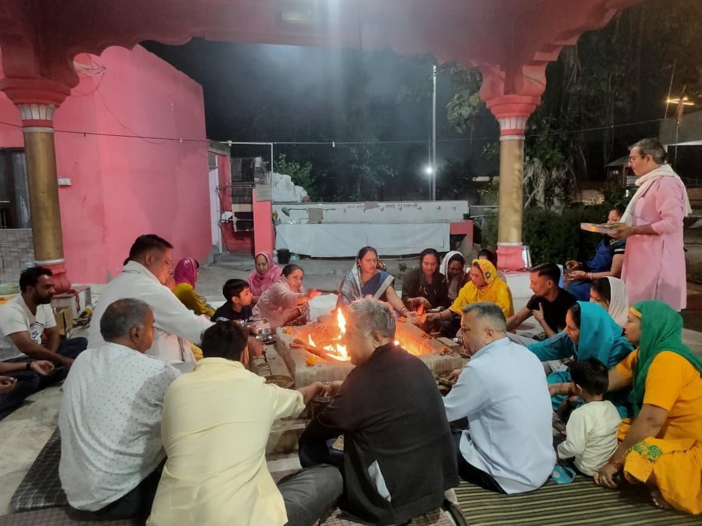

Every day
- माँ की रसोई में रोजाना सुबह 09:00 बजे से सांय 08:00 बजे तक भण्डारा।Bhandara at Maa ki Rasoi, every day from 9:00 AM to 8:00 PM.

Every day
Every Tuesday
Every lunar month
Every festival
Through the year
मंदिर में विशेष सेवाओं व आयोजनों में भाग लेने हेतु संपर्क करें।
Contact the mandir to take part in special sevas and events.